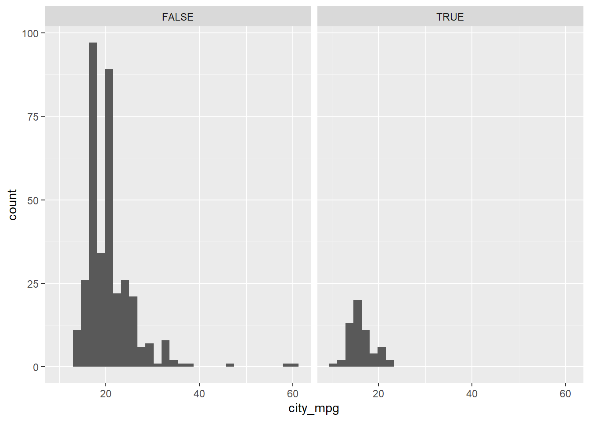
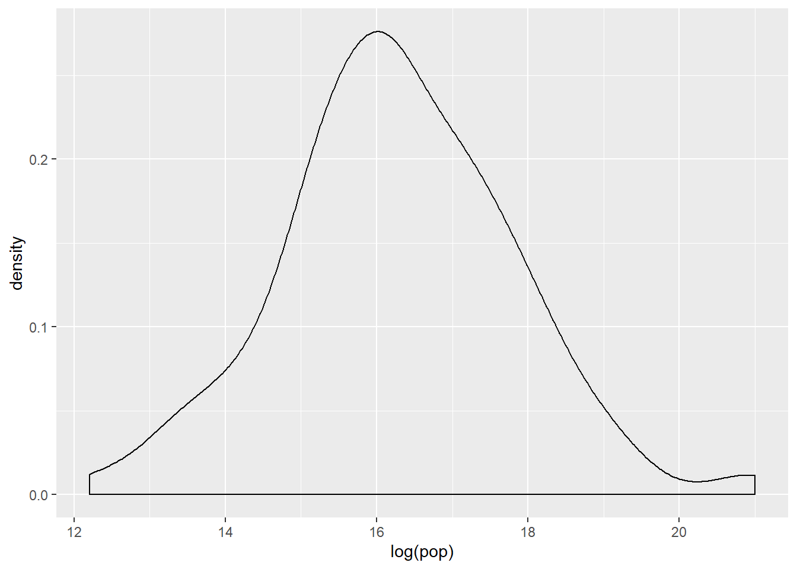

Module 7 Exploratory Data Analysis in R
7.1 Comics
In this chapter, you will learn how to create graphical and numerical summaries of two categorical variables.
url <- "https://assets.datacamp.com/production/course_1796/datasets/comics.csv"
filename <- basename(url)
if (!file.exists(filename)) download(url,destfile=filename)
comics <- read.csv(filename)
# comics %>%
# rename(
# sepal_length = Sepal.Length,
# sepal_width = Sepal.Width
# )7.1.1 Video: Exploring categorical data
str(comics)## 'data.frame': 23272 obs. of 11 variables:
## $ name : Factor w/ 23272 levels "'Spinner (Earth-616)",..: 19830 3335 22769 9647 20956 2220 17576 9347 18794 10957 ...
## $ id : Factor w/ 4 levels "No Dual","Public",..: 3 2 2 2 1 2 2 2 2 2 ...
## $ align : Factor w/ 4 levels "Bad","Good","Neutral",..: 2 2 3 2 2 2 2 2 3 2 ...
## $ eye : Factor w/ 26 levels "Amber Eyes","Auburn Hair",..: 11 5 5 5 5 5 6 6 6 5 ...
## $ hair : Factor w/ 28 levels "Auburn Hair",..: 7 27 3 3 4 14 7 7 7 4 ...
## $ gender : Factor w/ 3 levels "Female","Male",..: 2 2 2 2 2 2 2 2 2 2 ...
## $ gsm : Factor w/ 6 levels "Bisexual Characters",..: NA NA NA NA NA NA NA NA NA NA ...
## $ alive : Factor w/ 2 levels "Deceased Characters",..: 2 2 2 2 2 2 2 2 2 2 ...
## $ appearances : int 4043 3360 3061 2961 2258 2255 2072 2017 1955 1934 ...
## $ first_appear: Factor w/ 1606 levels "1935, October",..: 874 1278 1513 1296 1424 1432 1432 1364 1570 1432 ...
## $ publisher : Factor w/ 2 levels "dc","marvel": 2 2 2 2 2 2 2 2 2 2 ...levels(comics$align)## [1] "Bad" "Good" "Neutral"
## [4] "Reformed Criminals"levels(comics$id)## [1] "No Dual" "Public" "Secret" "Unknown"table(comics$id, comics$align)##
## Bad Good Neutral Reformed Criminals
## No Dual 474 647 390 0
## Public 2172 2930 965 1
## Secret 4493 2475 959 1
## Unknown 7 0 2 0ggplot(comics, aes(x=align, fill=id)) +
geom_bar()
ggplot(comics, aes(x=id, fill=align)) +
geom_bar()
7.1.2 Question: Bar chart expectations

Which one of the barcharts shows no relationship between age and flavor? In other words, which shows that pie preference is the same for both young and old? Source: DataCamp
It’s the first one.
7.1.3 Contingency table review
In this chapter you’ll continue working with the comics dataset introduced in the video. This is a collection of characteristics on all of the superheroes created by Marvel and DC comics in the last 80 years.
Let’s start by creating a contingency table, which is a useful way to represent the total counts of observations that fall into each combination of the levels of categorical variables.
# Print the first rows of the data
head(comics)## name id align eye
## 1 Spider-Man (Peter Parker) Secret Good Hazel Eyes
## 2 Captain America (Steven Rogers) Public Good Blue Eyes
## 3 Wolverine (James \\"Logan\\" Howlett) Public Neutral Blue Eyes
## 4 Iron Man (Anthony \\"Tony\\" Stark) Public Good Blue Eyes
## 5 Thor (Thor Odinson) No Dual Good Blue Eyes
## 6 Benjamin Grimm (Earth-616) Public Good Blue Eyes
## hair gender gsm alive appearances first_appear
## 1 Brown Hair Male <NA> Living Characters 4043 Aug-62
## 2 White Hair Male <NA> Living Characters 3360 Mar-41
## 3 Black Hair Male <NA> Living Characters 3061 Oct-74
## 4 Black Hair Male <NA> Living Characters 2961 Mar-63
## 5 Blond Hair Male <NA> Living Characters 2258 Nov-50
## 6 No Hair Male <NA> Living Characters 2255 Nov-61
## publisher
## 1 marvel
## 2 marvel
## 3 marvel
## 4 marvel
## 5 marvel
## 6 marvel# Check levels of align
levels(comics$align)## [1] "Bad" "Good" "Neutral"
## [4] "Reformed Criminals"# Check the levels of gender
levels(comics$gender)## [1] "Female" "Male" "Other"# Create a 2-way contingency table
table(comics$align, comics$gender)##
## Female Male Other
## Bad 1573 7561 32
## Good 2490 4809 17
## Neutral 836 1799 17
## Reformed Criminals 1 2 07.1.4 Dropping levels
The contingency table from the last exercise revealed that there are some levels that have very low counts. To simplify the analysis, it often helps to drop such levels.
In R, this requires two steps: first filtering out any rows with the levels that have very low counts, then removing these levels from the factor variable with droplevels(). This is because the droplevels() function would keep levels that have just 1 or 2 counts; it only drops levels that don’t exist in a dataset.
# Assign contingency table to tab
tab <- table(comics$align, comics$gender)
# Load dplyr
library(dplyr)
# Print tab
tab##
## Female Male Other
## Bad 1573 7561 32
## Good 2490 4809 17
## Neutral 836 1799 17
## Reformed Criminals 1 2 0# Remove align level
comics_filtered <- comics %>%
filter(align != "Reformed Criminals") %>%
droplevels()
# See the result
head(comics_filtered)## name id align eye
## 1 Spider-Man (Peter Parker) Secret Good Hazel Eyes
## 2 Captain America (Steven Rogers) Public Good Blue Eyes
## 3 Wolverine (James \\"Logan\\" Howlett) Public Neutral Blue Eyes
## 4 Iron Man (Anthony \\"Tony\\" Stark) Public Good Blue Eyes
## 5 Thor (Thor Odinson) No Dual Good Blue Eyes
## 6 Benjamin Grimm (Earth-616) Public Good Blue Eyes
## hair gender gsm alive appearances first_appear
## 1 Brown Hair Male <NA> Living Characters 4043 Aug-62
## 2 White Hair Male <NA> Living Characters 3360 Mar-41
## 3 Black Hair Male <NA> Living Characters 3061 Oct-74
## 4 Black Hair Male <NA> Living Characters 2961 Mar-63
## 5 Blond Hair Male <NA> Living Characters 2258 Nov-50
## 6 No Hair Male <NA> Living Characters 2255 Nov-61
## publisher
## 1 marvel
## 2 marvel
## 3 marvel
## 4 marvel
## 5 marvel
## 6 marvel# Check contingency table
table(comics_filtered$align, comics_filtered$gender)##
## Female Male Other
## Bad 1573 7561 32
## Good 2490 4809 17
## Neutral 836 1799 177.1.5 Side-by-side barcharts
While a contingency table represents the counts numerically, it’s often more useful to represent them graphically.
Here you’ll construct two side-by-side barcharts of the comics data. This shows that there can often be two or more options for presenting the same data. Passing the argument position = "dodge" to geom_bar() says that you want a side-by-side (i.e. not stacked) barchart.
# Load ggplot2
library(ggplot2)
# Create side-by-side barchart of gender by alignment
ggplot(comics, aes(x = align, fill = gender)) +
geom_bar(position = "dodge")# Create side-by-side barchart of alignment by gender
ggplot(comics, aes(x = gender, fill = align)) +
geom_bar(position = "dodge") +
theme(axis.text.x = element_text(angle = 90))Take a moment to toggle between the resulting plots in the plotting window.
7.1.6 Question: Bar chart interpretation

Which of the following interpretations of the bar charts to your right is not valid? Source: DataCamp
It’s “Across all genders, Bad is the most common alignment.”
7.1.7 Video: Counts vs. proportions
7.1.8 Question: Conditional proportions
tab <- table(comics$align, comics$gender)
options(scipen = 999, digits = 3) # Print fewer digits
prop.table(tab) # Joint proportions##
## Female Male Other
## Bad 0.0821968 0.3950985 0.0016722
## Good 0.1301144 0.2512933 0.0008883
## Neutral 0.0436850 0.0940064 0.0008883
## Reformed Criminals 0.0000523 0.0001045 0.0000000prop.table(tab, 2) # Conditional on columns##
## Female Male Other
## Bad 0.321020 0.533554 0.484848
## Good 0.508163 0.339355 0.257576
## Neutral 0.170612 0.126949 0.257576
## Reformed Criminals 0.000204 0.000141 0.000000Approximately what proportion of all female characters are good?
It’s 51%. To answer this question, you needed to look at how align was distributed within each gender. That is, you wanted to condition on the gender variable.
7.1.9 Counts vs. proportions (2)
Bar charts can tell dramatically different stories depending on whether they represent counts or proportions and, if proportions, what the proportions are conditioned on. To demonstrate this difference, you’ll construct two barcharts in this exercise: one of counts and one of proportions.
# Plot of gender by align
ggplot(comics, aes(x = align, fill = gender)) +
geom_bar()# Plot proportion of gender, conditional on align
ggplot(comics, aes(x = align, fill = gender)) +
geom_bar(position = "fill") +
ylab("proportion")By adding position = "fill" to geom_bar(), you are saying you want the bars to fill the entire height of the plotting window, thus displaying proportions and not raw counts.
7.1.10 Video: Distribution of one variable
Take your original two-way table, then sum the cells across each level of one of the variables. Since we’ve summed over the margins of the other variable, this is sometimes called a marginal distribution.

Faceting vs. stacking. Source: DataCamp

Areas are easier to compare in bar charts. Source: DataCamp
7.1.11 Marginal barchart
If you are interested in the distribution of alignment of all superheroes, it makes sense to construct a barchart for just that single variable.
You can improve the interpretability of the plot, though, by implementing some sensible ordering. Superheroes that are "Neutral" show an alignment between "Good" and "Bad", so it makes sense to put that bar in the middle.
# Change the order of the levels in align
comics$align <- factor(comics$align,
levels = c("Bad", "Neutral", "Good"))
# Create plot of align
comics %>%
filter(!is.na(align)) %>%
ggplot(aes(x = align)) +
geom_bar()7.1.12 Conditional barchart
Now, if you want to break down the distribution of alignment based on gender, you’re looking for conditional distributions.
You could make these by creating multiple filtered datasets (one for each gender) or by faceting the plot of alignment based on gender. As a point of comparison, we’ve provided your plot of the marginal distribution of alignment from the last exercise.
# Plot of alignment broken down by gender
ggplot(comics, aes(x = align)) +
geom_bar() +
facet_wrap(~ gender)7.1.13 Improve piechart
The piechart is a very common way to represent the distribution of a single categorical variable, but they can be more difficult to interpret than barcharts.
This is a piechart of a dataset called ‘pies’ that contains the favorite pie flavors of 98 people. Improve the representation of these data by constructing a barchart that is ordered in descending order of count.
pies <- data.frame(c(rep("apple", times = 17), rep("blueberry", times = 14), rep("boston creme", times =15), rep("cherry", times =13), rep("key lime", times =16), rep("pumpkin", times =12), rep("strawberry", times =11)))
names(pies) <- "flavor"
# Create pie chart of flavor
pie(table(pies$flavor))ggplot(pies, aes(x = flavor)) +
geom_bar()# Put levels of flavor in descending order
lev <- c("apple", "key lime", "boston creme", "blueberry", "cherry", "pumpkin", "strawberry")
pies$flavor <- factor(pies$flavor, levels = lev)
# Create barchart of flavor
ggplot(pies, aes(x = flavor)) +
geom_bar(fill = "chartreuse") +
theme(axis.text.x = element_text(angle = 90))# Alternative solution to finding levels
# lev <- unlist(select(arrange(cnt, desc(n)), flavor))7.2 Cars
In this chapter, you will learn how to graphically summarize numerical data.
library(readr)
cars <- read_csv('https://assets.datacamp.com/production/course_1796/datasets/cars04.csv')## Parsed with column specification:
## cols(
## name = col_character(),
## sports_car = col_logical(),
## suv = col_logical(),
## wagon = col_logical(),
## minivan = col_logical(),
## pickup = col_logical(),
## all_wheel = col_logical(),
## rear_wheel = col_logical(),
## msrp = col_double(),
## dealer_cost = col_double(),
## eng_size = col_double(),
## ncyl = col_double(),
## horsepwr = col_double(),
## city_mpg = col_double(),
## hwy_mpg = col_double(),
## weight = col_double(),
## wheel_base = col_double(),
## length = col_double(),
## width = col_double()
## )#cars <- cars %>%
# mutate(msrp = as.integer(msrp))
cars[,c(9:10,12:19)] <- sapply(cars[,c(9:10,12:19)],as.integer)7.2.1 Video: Exploring numerical data
str(cars)## Classes 'spec_tbl_df', 'tbl_df', 'tbl' and 'data.frame': 428 obs. of 19 variables:
## $ name : chr "Chevrolet Aveo 4dr" "Chevrolet Aveo LS 4dr hatch" "Chevrolet Cavalier 2dr" "Chevrolet Cavalier 4dr" ...
## $ sports_car : logi FALSE FALSE FALSE FALSE FALSE FALSE ...
## $ suv : logi FALSE FALSE FALSE FALSE FALSE FALSE ...
## $ wagon : logi FALSE FALSE FALSE FALSE FALSE FALSE ...
## $ minivan : logi FALSE FALSE FALSE FALSE FALSE FALSE ...
## $ pickup : logi FALSE FALSE FALSE FALSE FALSE FALSE ...
## $ all_wheel : logi FALSE FALSE FALSE FALSE FALSE FALSE ...
## $ rear_wheel : logi FALSE FALSE FALSE FALSE FALSE FALSE ...
## $ msrp : int 11690 12585 14610 14810 16385 13670 15040 13270 13730 15460 ...
## $ dealer_cost: int 10965 11802 13697 13884 15357 12849 14086 12482 12906 14496 ...
## $ eng_size : num 1.6 1.6 2.2 2.2 2.2 2 2 2 2 2 ...
## $ ncyl : int 4 4 4 4 4 4 4 4 4 4 ...
## $ horsepwr : int 103 103 140 140 140 132 132 130 110 130 ...
## $ city_mpg : int 28 28 26 26 26 29 29 26 27 26 ...
## $ hwy_mpg : int 34 34 37 37 37 36 36 33 36 33 ...
## $ weight : int 2370 2348 2617 2676 2617 2581 2626 2612 2606 2606 ...
## $ wheel_base : int 98 98 104 104 104 105 105 103 103 103 ...
## $ length : int 167 153 183 183 183 174 174 168 168 168 ...
## $ width : int 66 66 69 68 69 67 67 67 67 67 ...
## - attr(*, "spec")=
## .. cols(
## .. name = col_character(),
## .. sports_car = col_logical(),
## .. suv = col_logical(),
## .. wagon = col_logical(),
## .. minivan = col_logical(),
## .. pickup = col_logical(),
## .. all_wheel = col_logical(),
## .. rear_wheel = col_logical(),
## .. msrp = col_double(),
## .. dealer_cost = col_double(),
## .. eng_size = col_double(),
## .. ncyl = col_double(),
## .. horsepwr = col_double(),
## .. city_mpg = col_double(),
## .. hwy_mpg = col_double(),
## .. weight = col_double(),
## .. wheel_base = col_double(),
## .. length = col_double(),
## .. width = col_double()
## .. )# The most direct way to represent numerical data is a dotplot
ggplot(cars, aes(x = weight)) +
geom_dotplot(dotsize = 0.4)## `stat_bindot()` using `bins = 30`. Pick better value with `binwidth`.## Warning: Removed 2 rows containing non-finite values (stat_bindot).# There is zero data loss in a dotplot - you could recreate the data set perfectly from the displayggplot(cars, aes(x = weight)) +
geom_histogram()## `stat_bin()` using `bins = 30`. Pick better value with `binwidth`.## Warning: Removed 2 rows containing non-finite values (stat_bin).# Because of binning, it's no longer possible to recreate the original data set# A density plot avoids the unnatural step-wise nature of a histogram
ggplot(cars, aes(x = weight)) +
geom_density()## Warning: Removed 2 rows containing non-finite values (stat_density).
# Use only when you have a large number of cases# A more abstracted sense of the distribution
ggplot(cars, aes(x = 1, y = weight)) +
geom_boxplot() +
coord_flip()## Warning: Removed 2 rows containing non-finite values (stat_boxplot).
ggplot(cars, aes(x = hwy_mpg)) +
geom_histogram() +
facet_wrap(~pickup)## `stat_bin()` using `bins = 30`. Pick better value with `binwidth`.## Warning: Removed 14 rows containing non-finite values (stat_bin).
7.2.2 Faceted histogram
In this chapter, you’ll be working with the cars dataset, which records characteristics on all of the new models of cars for sale in the US in a certain year. You will investigate the distribution of mileage across a categorial variable, but before you get there, you’ll want to familiarize yourself with the dataset.
# Load package
library(ggplot2)
# Learn data structure
str(cars)## Classes 'spec_tbl_df', 'tbl_df', 'tbl' and 'data.frame': 428 obs. of 19 variables:
## $ name : chr "Chevrolet Aveo 4dr" "Chevrolet Aveo LS 4dr hatch" "Chevrolet Cavalier 2dr" "Chevrolet Cavalier 4dr" ...
## $ sports_car : logi FALSE FALSE FALSE FALSE FALSE FALSE ...
## $ suv : logi FALSE FALSE FALSE FALSE FALSE FALSE ...
## $ wagon : logi FALSE FALSE FALSE FALSE FALSE FALSE ...
## $ minivan : logi FALSE FALSE FALSE FALSE FALSE FALSE ...
## $ pickup : logi FALSE FALSE FALSE FALSE FALSE FALSE ...
## $ all_wheel : logi FALSE FALSE FALSE FALSE FALSE FALSE ...
## $ rear_wheel : logi FALSE FALSE FALSE FALSE FALSE FALSE ...
## $ msrp : int 11690 12585 14610 14810 16385 13670 15040 13270 13730 15460 ...
## $ dealer_cost: int 10965 11802 13697 13884 15357 12849 14086 12482 12906 14496 ...
## $ eng_size : num 1.6 1.6 2.2 2.2 2.2 2 2 2 2 2 ...
## $ ncyl : int 4 4 4 4 4 4 4 4 4 4 ...
## $ horsepwr : int 103 103 140 140 140 132 132 130 110 130 ...
## $ city_mpg : int 28 28 26 26 26 29 29 26 27 26 ...
## $ hwy_mpg : int 34 34 37 37 37 36 36 33 36 33 ...
## $ weight : int 2370 2348 2617 2676 2617 2581 2626 2612 2606 2606 ...
## $ wheel_base : int 98 98 104 104 104 105 105 103 103 103 ...
## $ length : int 167 153 183 183 183 174 174 168 168 168 ...
## $ width : int 66 66 69 68 69 67 67 67 67 67 ...
## - attr(*, "spec")=
## .. cols(
## .. name = col_character(),
## .. sports_car = col_logical(),
## .. suv = col_logical(),
## .. wagon = col_logical(),
## .. minivan = col_logical(),
## .. pickup = col_logical(),
## .. all_wheel = col_logical(),
## .. rear_wheel = col_logical(),
## .. msrp = col_double(),
## .. dealer_cost = col_double(),
## .. eng_size = col_double(),
## .. ncyl = col_double(),
## .. horsepwr = col_double(),
## .. city_mpg = col_double(),
## .. hwy_mpg = col_double(),
## .. weight = col_double(),
## .. wheel_base = col_double(),
## .. length = col_double(),
## .. width = col_double()
## .. )# Create faceted histogram
ggplot(cars, aes(x = city_mpg)) +
geom_histogram() +
facet_wrap(~ suv)## `stat_bin()` using `bins = 30`. Pick better value with `binwidth`.## Warning: Removed 14 rows containing non-finite values (stat_bin).
In this exercise, you faceted by the suv variable, but it’s important to note that you can facet a plot by any categorical variable using facet_wrap().
7.2.3 Boxplots and density plots
The mileage of a car tends to be associated with the size of its engine (as measured by the number of cylinders). To explore the relationship between these two variables, you could stick to using histograms, but in this exercise you’ll try your hand at two alternatives: the box plot and the density plot.
# Create box plots of city mpg by ncyl
ggplot(cars, aes(x = as.factor(ncyl), y = city_mpg)) +
geom_boxplot()## Warning: Removed 14 rows containing non-finite values (stat_boxplot).# Check how many possible levels of ncyl there are
unique(cars$ncyl)## [1] 4 6 3 8 5 12 10 -1# Which levels are the most common?
table(cars$ncyl)##
## -1 3 4 5 6 8 10 12
## 2 1 136 7 190 87 2 3# Filter cars with 4, 6, 8 cylinders
common_cyl <- filter(cars, ncyl %in% c(4, 6, 8))
# Create box plots of city mpg by ncyl
ggplot(common_cyl, aes(x = as.factor(ncyl), y = city_mpg)) +
geom_boxplot()## Warning: Removed 11 rows containing non-finite values (stat_boxplot).# Create overlaid density plots for same data
ggplot(common_cyl, aes(x = city_mpg, fill = as.factor(ncyl))) +
geom_density(alpha = .3)## Warning: Removed 11 rows containing non-finite values (stat_density).7.2.4 Compare distribution via plots
Which of the following interpretations of the plot is not valid?
It’s “The variability in mileage of 8 cylinder cars is similar to the variability in mileage of 4 cylinder cars.” The variability in mileage of 8 cylinder cars seem much smaller than that of 4 cylinder cars.
7.2.5 Video: Distribution of one variable
…Specifically a numerical variable.
ggplot(cars, aes(x = hwy_mpg)) +
geom_histogram()## `stat_bin()` using `bins = 30`. Pick better value with `binwidth`.## Warning: Removed 14 rows containing non-finite values (stat_bin).# Adding a facet_wrap layer (faceting on a categorical value)
ggplot(cars, aes(x = hwy_mpg)) +
geom_histogram() +
facet_wrap(~pickup)## `stat_bin()` using `bins = 30`. Pick better value with `binwidth`.## Warning: Removed 14 rows containing non-finite values (stat_bin).# Adding a filter (filtering on a numerical variable)
cars2 <- cars %>%
filter(eng_size < 2.0)
ggplot(cars2, aes(x = hwy_mpg)) +
geom_histogram()## `stat_bin()` using `bins = 30`. Pick better value with `binwidth`.
# Alternatively
cars %>%
filter(eng_size < 2.0) %>%
ggplot(aes(x = hwy_mpg)) + # Note that you don't need to specify the data frame, as we're piping in cars
geom_histogram()## `stat_bin()` using `bins = 30`. Pick better value with `binwidth`.# Alternatively
cars %>%
filter(eng_size < 2.0) %>%
ggplot(aes(x = hwy_mpg)) + # Note that you don't need to specify the data frame, as we're piping in cars
geom_histogram(binwidth = 5)7.2.6 Marginal and conditional histograms
Now, turn your attention to a new variable: horsepwr. The goal is to get a sense of the marginal distribution of this variable and then compare it to the distribution of horsepower conditional on the price of the car being less than $25,000.
You’ll be making two plots using the “data pipeline” paradigm, where you start with the raw data and end with the plot.
# Create hist of horsepwr
cars %>%
ggplot(aes(x = horsepwr)) +
geom_histogram() +
xlim(c(90, 550)) +
ylim(c(0, 50)) +
ggtitle("Distribution of horsepower for all cars")## `stat_bin()` using `bins = 30`. Pick better value with `binwidth`.## Warning: Removed 1 rows containing non-finite values (stat_bin).## Warning: Removed 3 rows containing missing values (geom_bar).# Create hist of horsepwr for affordable cars
cars %>%
filter(msrp < 25000) %>%
ggplot(aes(x = horsepwr)) +
geom_histogram() +
xlim(c(90, 550)) +
ylim(c(0, 50)) +
ggtitle("Distribution of horsepower for affordable cars")## `stat_bin()` using `bins = 30`. Pick better value with `binwidth`.## Warning: Removed 1 rows containing non-finite values (stat_bin).## Warning: Removed 2 rows containing missing values (geom_bar).7.2.7 Question: Marginal and conditional histograms interpretation
Observe the two histograms in the plotting window and decide which of the following is a valid interpretation.
It’s “The highest horsepower car in the less expensive range has just under 250 horsepower.”
7.2.8 Three binwidths
Before you take these plots for granted, it’s a good idea to see how things change when you alter the binwidth. The binwidth determines how smooth your distribution will appear: the smaller the binwidth, the more jagged your distribution becomes. It’s good practice to consider several binwidths in order to detect different types of structure in your data.
# Create hist of horsepwr with binwidth of 3
cars %>%
ggplot(aes(x = horsepwr)) +
geom_histogram(binwidth = 3) +
ggtitle("binwidth = 3")
# Create hist of horsepwr with binwidth of 30
cars %>%
ggplot(aes(x = horsepwr)) +
geom_histogram(binwidth = 30) +
ggtitle("binwidth = 30")
# Create hist of horsepwr with binwidth of 60
cars %>%
ggplot(aes(x = horsepwr)) +
geom_histogram(binwidth = 60) +
ggtitle("binwidth = 60")
Be sure to toggle back and forth in the plots pane to compare the histograms.
7.2.9 Question: Three binwidths interpretation
What feature is present in Plot A that’s not found in B or C?
It’s “There is a tendency for cars to have horsepower right at 200 or 300 horsepower.” Plot A is the only histogram that shows the count for cars with exactly 200 and 300 horsepower.
7.2.10 Video: Box plots
7.2.11 Box plots for outliers
In addition to indicating the center and spread of a distribution, a box plot provides a graphical means to detect outliers. You can apply this method to the msrp column (manufacturer’s suggested retail price) to detect if there are unusually expensive or cheap cars.
# Construct box plot of msrp
cars %>%
ggplot(aes(x = 1, y = msrp)) +
geom_boxplot()# Exclude outliers from data
cars_no_out <- cars %>%
filter(msrp < 100000)
# Construct box plot of msrp using the reduced dataset
cars_no_out %>%
ggplot(aes(x = 1, y = msrp)) +
geom_boxplot()Be sure to toggle back and forth in the plots pane to compare the box plots.
7.2.12 Plot selection
Consider two other columns in the cars dataset: city_mpg and width. Which is the most appropriate plot for displaying the important features of their distributions? Remember, both density plots and box plots display the central tendency and spread of the data, but the box plot is more robust to outliers.
# Create plot of city_mpg
cars %>%
ggplot(aes(x = city_mpg)) +
geom_density()## Warning: Removed 14 rows containing non-finite values (stat_density).cars %>%
ggplot(aes(x = 1, y = city_mpg)) +
geom_boxplot()## Warning: Removed 14 rows containing non-finite values (stat_boxplot).# Create plot of width
cars %>%
ggplot(aes(x = width)) +
geom_density()## Warning: Removed 28 rows containing non-finite values (stat_density).cars %>%
ggplot(aes(x = 1, y = width)) +
geom_boxplot()## Warning: Removed 28 rows containing non-finite values (stat_boxplot).Because the city_mpg variable has a much wider range with its outliers, it’s best to display its distribution as a box plot.
7.2.13 Video: Visualization in higher dimensions
ggplot(cars, aes(x = msrp)) +
geom_density() +
facet_grid(pickup ~ rear_wheel)# Add labels to aid understanding
ggplot(cars, aes(x = msrp)) +
geom_density() +
facet_grid(pickup ~ rear_wheel, labeller = label_both)# There's very few rear wheel pickups and front wheel pickups
table(cars$rear_wheel, cars$pickup) # table(rows, columns)##
## FALSE TRUE
## FALSE 306 12
## TRUE 98 127.2.14 3 variable plot
Faceting is a valuable technique for looking at several conditional distributions at the same time. If the faceted distributions are laid out in a grid, you can consider the association between a variable and two others, one on the rows of the grid and the other on the columns.
# Facet hists using hwy mileage and ncyl
common_cyl %>%
ggplot(aes(x = hwy_mpg)) +
geom_histogram() +
facet_grid(ncyl ~ suv, labeller = label_both) +
ggtitle("Mileage by suv and ncyl")## `stat_bin()` using `bins = 30`. Pick better value with `binwidth`.## Warning: Removed 11 rows containing non-finite values (stat_bin).
7.2.15 Question: Interpret 3 var plot
Which of the following interpretations of the plot is valid?
It’s “Across both SUVs and non-SUVs, mileage tends to decrease as the number of cylinders increases.”
7.3 Gapminder
Now that we’ve looked at exploring categorical and numerical data, you’ll learn some useful statistics for describing distributions of data.
7.3.1 Video: Measures of center
7.3.2 Question: Choice of center measure
The choice of measure for center can have a dramatic impact on what we consider to be a typical observation, so it is important that you consider the shape of the distribution before deciding on the measure.

Which set of measures of central tendency would be worst for describing the two distributions shown here? Source: DataCamp
It’s “A: mean, B: mode”.
7.3.3 Calculate center measures
Throughout this chapter, you will use data from gapminder, which tracks demographic data in countries of the world over time. To learn more about it, you can bring up the help file with ?gapminder.
For this exercise, focus on how the life expectancy differs from continent to continent. This requires that you conduct your analysis not at the country level, but aggregated up to the continent level. This is made possible by the one-two punch of group_by() and summarize(), a very powerful syntax for carrying out the same analysis on different subsets of the full dataset.
# Create dataset of 2007 data
gap2007 <- filter(gapminder, year == 2007)
# Compute groupwise mean and median lifeExp
gap2007 %>%
group_by(continent) %>%
summarize(mean(lifeExp),
median(lifeExp))## # A tibble: 5 x 3
## continent `mean(lifeExp)` `median(lifeExp)`
## <fct> <dbl> <dbl>
## 1 Africa 54.8 52.9
## 2 Americas 73.6 72.9
## 3 Asia 70.7 72.4
## 4 Europe 77.6 78.6
## 5 Oceania 80.7 80.7# Generate box plots of lifeExp for each continent
gap2007 %>%
ggplot(aes(x = continent, y = lifeExp)) +
geom_boxplot()7.3.4 Video: Measures of variability
x <- head(round(gap2007$lifeExp), 11)
x - mean(x)## [1] -23.91 8.09 4.09 -24.91 7.09 13.09 12.09 8.09 -3.91
## [10] 11.09 -10.91sum(x - mean(x)) # which is close to 0## [1] 0.0000000000000284sum((x - mean(x))^2) # which will keep getting bigger the more data you add## [1] 1965n <- 11
sum((x - mean(x))^2)/n## [1] 179sum((x - mean(x))^2)/(n-1) # The sample variance## [1] 196var(x) # R's built-in function## [1] 196sqrt(sum((x - mean(x))^2)/(n-1))## [1] 14sd(x)## [1] 14# which is more commonly used than the...
summary(x)## Min. 1st Qu. Median Mean 3rd Qu. Max.
## 43.0 60.5 75.0 67.9 77.5 81.0IQR(x)## [1] 17# However SD is affected by extreme values, unlike IQR, which is better to use with large skew and extreme outliersChoice of spread measure The choice of measure for spread can dramatically impact how variable we consider our data to be, so it is important that you consider the shape of the distribution before deciding on the measure.
Which set of measures of spread would be worst for describing the two distributions shown here? Source: DataCamp
It’s “A: Variance, B: Range”. Notice the high peak of A and the considerable width of it. What does that tell you about its variance?
7.3.5 Calculate spread measures
Let’s extend the powerful group_by() and summarize() syntax to measures of spread. If you’re unsure whether you’re working with symmetric or skewed distributions, it’s a good idea to consider a robust measure like IQR in addition to the usual measures of variance or standard deviation.
# Compute groupwise measures of spread
gap2007 %>%
group_by(continent) %>%
summarize(sd(lifeExp),
IQR(lifeExp),
n())## # A tibble: 5 x 4
## continent `sd(lifeExp)` `IQR(lifeExp)` `n()`
## <fct> <dbl> <dbl> <int>
## 1 Africa 9.63 11.6 52
## 2 Americas 4.44 4.63 25
## 3 Asia 7.96 10.2 33
## 4 Europe 2.98 4.78 30
## 5 Oceania 0.729 0.516 2# Generate overlaid density plots
gap2007 %>%
ggplot(aes(x = lifeExp, fill = continent)) +
geom_density(alpha = 0.3)7.3.6 Choose measures for center and spread

Consider the density plots shown here. What are the most appropriate measures to describe their centers and spreads? In this exercise, you’ll select the measures and then calculate them. Source: DataCamp
# Compute stats for lifeExp in Americas
gap2007 %>%
filter(continent == "Americas") %>%
summarize(mean(lifeExp),
sd(lifeExp))## # A tibble: 1 x 2
## `mean(lifeExp)` `sd(lifeExp)`
## <dbl> <dbl>
## 1 73.6 4.44# Compute stats for population
gap2007 %>%
summarize(median(pop),
IQR(pop))## # A tibble: 1 x 2
## `median(pop)` `IQR(pop)`
## <dbl> <dbl>
## 1 10517531 26702008.Like mean and standard deviation, median and IQR measure the central tendency and spread, respectively, but are robust to outliers and non-normal data.
7.3.7 Video: Shape and transformations
7.3.8 Describe the shape
To build some familiarity with distributions of different shapes, consider the four that are plotted here.

Which of the following options does the best job of describing their shape in terms of modality and skew/symmetry? Source: DataCamp
It’s “A: unimodal left-skewed; B: unimodal symmetric; C: unimodal right-skewed, D: bimodal symmetric.”
7.3.9 Transformations
Highly skewed distributions can make it very difficult to learn anything from a visualization. Transformations can be helpful in revealing the more subtle structure.
Here you’ll focus on the population variable, which exhibits strong right skew, and transform it with the natural logarithm function (log() in R).
# Create density plot of old variable
gap2007 %>%
ggplot(aes(x = pop)) +
geom_density()# Transform the skewed pop variable
gap2007 <- gap2007 %>%
mutate(log_pop = log(pop))
# Create density plot of new variable
gap2007 %>%
ggplot(aes(x = log(pop))) +
geom_density()
7.3.10 Video: Outliers
7.3.11 Identify outliers
Consider the distribution, shown here, of the life expectancies of the countries in Asia. The box plot identifies one clear outlier: a country with a notably low life expectancy. Do you have a guess as to which country this might be? Test your guess in the console using either min() or filter(), then proceed to building a plot with that country removed.
# Filter for Asia, add column indicating outliers
gap_asia <- gap2007 %>%
filter(continent == "Asia") %>%
mutate(is_outlier = lifeExp < 50)
# Remove outliers, create box plot of lifeExp
gap_asia %>%
filter(!is_outlier) %>%
ggplot(aes(x = 1, y = lifeExp)) +
geom_boxplot()7.4 Email
Apply what you’ve learned to explore and summarize a real world dataset in this case study of email spam. We will use the email data set in the openintro package.
7.4.1 Video: Introducing the data
email <- email %>%
mutate(spam = as.factor(spam))
levels(email$spam) <- c("not-spam", "spam")
head(email)## # A tibble: 6 x 21
## spam to_multiple from cc sent_email time image
## <fct> <dbl> <dbl> <int> <dbl> <dttm> <dbl>
## 1 not-~ 0 1 0 0 2012-01-01 06:16:41 0
## 2 not-~ 0 1 0 0 2012-01-01 07:03:59 0
## 3 not-~ 0 1 0 0 2012-01-01 16:00:32 0
## 4 not-~ 0 1 0 0 2012-01-01 09:09:49 0
## 5 not-~ 0 1 0 0 2012-01-01 10:00:01 0
## 6 not-~ 0 1 0 0 2012-01-01 10:04:46 0
## # ... with 14 more variables: attach <dbl>, dollar <dbl>,
## # winner <fct>, inherit <dbl>, viagra <dbl>, password <dbl>,
## # num_char <dbl>, line_breaks <int>, format <dbl>, re_subj <dbl>,
## # exclaim_subj <dbl>, urgent_subj <dbl>, exclaim_mess <dbl>,
## # number <fct>str(email)## Classes 'tbl_df', 'tbl' and 'data.frame': 3921 obs. of 21 variables:
## $ spam : Factor w/ 2 levels "not-spam","spam": 1 1 1 1 1 1 1 1 1 1 ...
## $ to_multiple : num 0 0 0 0 0 0 1 1 0 0 ...
## $ from : num 1 1 1 1 1 1 1 1 1 1 ...
## $ cc : int 0 0 0 0 0 0 0 1 0 0 ...
## $ sent_email : num 0 0 0 0 0 0 1 1 0 0 ...
## $ time : POSIXct, format: "2012-01-01 06:16:41" ...
## $ image : num 0 0 0 0 0 0 0 1 0 0 ...
## $ attach : num 0 0 0 0 0 0 0 1 0 0 ...
## $ dollar : num 0 0 4 0 0 0 0 0 0 0 ...
## $ winner : Factor w/ 2 levels "no","yes": 1 1 1 1 1 1 1 1 1 1 ...
## $ inherit : num 0 0 1 0 0 0 0 0 0 0 ...
## $ viagra : num 0 0 0 0 0 0 0 0 0 0 ...
## $ password : num 0 0 0 0 2 2 0 0 0 0 ...
## $ num_char : num 11.37 10.5 7.77 13.26 1.23 ...
## $ line_breaks : int 202 202 192 255 29 25 193 237 69 68 ...
## $ format : num 1 1 1 1 0 0 1 1 0 1 ...
## $ re_subj : num 0 0 0 0 0 0 0 0 0 0 ...
## $ exclaim_subj: num 0 0 0 0 0 0 0 0 0 0 ...
## $ urgent_subj : num 0 0 0 0 0 0 0 0 0 0 ...
## $ exclaim_mess: num 0 1 6 48 1 1 1 18 1 0 ...
## $ number : Factor w/ 3 levels "none","small",..: 3 2 2 2 1 1 3 2 2 2 ...7.4.2 Spam and num_char
Is there an association between spam and the length of an email? You could imagine a story either way:
Spam is more likely to be a short message tempting me to click on a link, or
My normal email is likely shorter since I exchange brief emails with my friends all the time.
Here, you’ll use the email dataset to settle that question. Begin by bringing up the help file and learning about all the variables with ?email.
As you explore the association between spam and the length of an email, use this opportunity to try out linking a dplyr chain with the layers in a ggplot2 object.
# Compute summary statistics
email %>%
group_by(spam) %>%
summarize(median(num_char),
IQR(num_char))## # A tibble: 2 x 3
## spam `median(num_char)` `IQR(num_char)`
## <fct> <dbl> <dbl>
## 1 not-spam 6.83 13.6
## 2 spam 1.05 2.82# Create plot
email %>%
mutate(log_num_char = log(num_char)) %>%
ggplot(aes(x = spam, y = log_num_char)) +
geom_boxplot()You’ll interpret this plot in the next exercise.
7.4.3 Spam and num_char interpretation
Which of the following interpretations of the plot is valid?
It’s “The median length of not-spam emails is greater than that of spam emails.”
7.4.4 Spam and !!!
Let’s look at a more obvious indicator of spam: exclamation marks. exclaim_mess contains the number of exclamation marks in each message. Using summary statistics and visualization, see if there is a relationship between this variable and whether or not a message is spam.
Experiment with different types of plots until you find one that is the most informative. Recall that you’ve seen:
- Side-by-side box plots
- Faceted histograms
- Overlaid density plots
# Compute center and spread for exclaim_mess by spam
email %>%
group_by(spam) %>%
summarize(median(exclaim_mess),
IQR(exclaim_mess))## # A tibble: 2 x 3
## spam `median(exclaim_mess)` `IQR(exclaim_mess)`
## <fct> <dbl> <dbl>
## 1 not-spam 1 5
## 2 spam 0 1# Create plot for spam and exclaim_mess
email %>%
mutate(log_exclaim_mess = log(exclaim_mess + 0.01)) %>%
ggplot(aes(x = 1, y = log_exclaim_mess)) +
geom_boxplot() +
facet_wrap(~ spam)# Alternative plot: side-by-side box plots
email %>%
mutate(log_exclaim_mess = log(exclaim_mess + 0.01)) %>%
ggplot(aes(x = log_exclaim_mess)) +
geom_histogram() +
facet_wrap(~ spam)## `stat_bin()` using `bins = 30`. Pick better value with `binwidth`.# Alternative plot: Overlaid density plots
email %>%
mutate(log_exclaim_mess = log(exclaim_mess + .01)) %>%
ggplot(aes(x = log_exclaim_mess, fill = spam)) +
geom_density(alpha = 0.3)7.4.5 Spam and !!! interpretation
Which interpretation of these faceted histograms is not correct?
It’s “There are more cases of spam in this dataset than not-spam.”
7.4.6 Video: Check-in 1
7.4.7 Collapsing levels
If it was difficult to work with the heavy skew of exclaim_mess, the number of images attached to each email (image) poses even more of a challenge. Run the following code at the console to get a sense of its distribution:
table(email$image)##
## 0 1 2 3 4 5 9 20
## 3811 76 17 11 2 2 1 1Recall that this tabulates the number of cases in each category (so there were 3811 emails with 0 images, for example). Given the very low counts at the higher number of images, let’s collapse image into a categorical variable that indicates whether or not the email had at least one image. In this exercise, you’ll create this new variable and explore its association with spam.
# Create plot of proportion of spam by image
email %>%
mutate(has_image = image > 0) %>%
ggplot(aes(x = has_image, fill = spam)) +
geom_bar(position = "fill")Let’s interpret this plot in the next exercise.
7.4.8 Question: Image and spam interpretation
Which of the following interpretations of the plot is valid?
It’s “An email without an image is more likely to be not-spam than spam.”
7.4.9 Data Integrity
In the process of exploring a dataset, you’ll sometimes come across something that will lead you to question how the data were compiled. For example, the variable num_char contains the number of characters in the email, in thousands, so it could take decimal values, but it certainly shouldn’t take negative values.
You can formulate a test to ensure this variable is behaving as we expect:
email$num_char < 0## [1] FALSE FALSE FALSE FALSE FALSE FALSE FALSE FALSE FALSE FALSE
## [11] FALSE FALSE FALSE FALSE FALSE FALSE FALSE FALSE FALSE FALSE
## [21] FALSE FALSE FALSE FALSE FALSE FALSE FALSE FALSE FALSE FALSE
## [31] FALSE FALSE FALSE FALSE FALSE FALSE FALSE FALSE FALSE FALSE
## [41] FALSE FALSE FALSE FALSE FALSE FALSE FALSE FALSE FALSE FALSE
## [51] FALSE FALSE FALSE FALSE FALSE FALSE FALSE FALSE FALSE FALSE
## [61] FALSE FALSE FALSE FALSE FALSE FALSE FALSE FALSE FALSE FALSE
## [71] FALSE FALSE FALSE FALSE FALSE FALSE FALSE FALSE FALSE FALSE
## [81] FALSE FALSE FALSE FALSE FALSE FALSE FALSE FALSE FALSE FALSE
## [91] FALSE FALSE FALSE FALSE FALSE FALSE FALSE FALSE FALSE FALSE
## [101] FALSE FALSE FALSE FALSE FALSE FALSE FALSE FALSE FALSE FALSE
## [111] FALSE FALSE FALSE FALSE FALSE FALSE FALSE FALSE FALSE FALSE
## [121] FALSE FALSE FALSE FALSE FALSE FALSE FALSE FALSE FALSE FALSE
## [131] FALSE FALSE FALSE FALSE FALSE FALSE FALSE FALSE FALSE FALSE
## [141] FALSE FALSE FALSE FALSE FALSE FALSE FALSE FALSE FALSE FALSE
## [151] FALSE FALSE FALSE FALSE FALSE FALSE FALSE FALSE FALSE FALSE
## [161] FALSE FALSE FALSE FALSE FALSE FALSE FALSE FALSE FALSE FALSE
## [171] FALSE FALSE FALSE FALSE FALSE FALSE FALSE FALSE FALSE FALSE
## [181] FALSE FALSE FALSE FALSE FALSE FALSE FALSE FALSE FALSE FALSE
## [191] FALSE FALSE FALSE FALSE FALSE FALSE FALSE FALSE FALSE FALSE
## [201] FALSE FALSE FALSE FALSE FALSE FALSE FALSE FALSE FALSE FALSE
## [211] FALSE FALSE FALSE FALSE FALSE FALSE FALSE FALSE FALSE FALSE
## [221] FALSE FALSE FALSE FALSE FALSE FALSE FALSE FALSE FALSE FALSE
## [231] FALSE FALSE FALSE FALSE FALSE FALSE FALSE FALSE FALSE FALSE
## [241] FALSE FALSE FALSE FALSE FALSE FALSE FALSE FALSE FALSE FALSE
## [251] FALSE FALSE FALSE FALSE FALSE FALSE FALSE FALSE FALSE FALSE
## [261] FALSE FALSE FALSE FALSE FALSE FALSE FALSE FALSE FALSE FALSE
## [271] FALSE FALSE FALSE FALSE FALSE FALSE FALSE FALSE FALSE FALSE
## [281] FALSE FALSE FALSE FALSE FALSE FALSE FALSE FALSE FALSE FALSE
## [291] FALSE FALSE FALSE FALSE FALSE FALSE FALSE FALSE FALSE FALSE
## [301] FALSE FALSE FALSE FALSE FALSE FALSE FALSE FALSE FALSE FALSE
## [311] FALSE FALSE FALSE FALSE FALSE FALSE FALSE FALSE FALSE FALSE
## [321] FALSE FALSE FALSE FALSE FALSE FALSE FALSE FALSE FALSE FALSE
## [331] FALSE FALSE FALSE FALSE FALSE FALSE FALSE FALSE FALSE FALSE
## [341] FALSE FALSE FALSE FALSE FALSE FALSE FALSE FALSE FALSE FALSE
## [351] FALSE FALSE FALSE FALSE FALSE FALSE FALSE FALSE FALSE FALSE
## [361] FALSE FALSE FALSE FALSE FALSE FALSE FALSE FALSE FALSE FALSE
## [371] FALSE FALSE FALSE FALSE FALSE FALSE FALSE FALSE FALSE FALSE
## [381] FALSE FALSE FALSE FALSE FALSE FALSE FALSE FALSE FALSE FALSE
## [391] FALSE FALSE FALSE FALSE FALSE FALSE FALSE FALSE FALSE FALSE
## [401] FALSE FALSE FALSE FALSE FALSE FALSE FALSE FALSE FALSE FALSE
## [411] FALSE FALSE FALSE FALSE FALSE FALSE FALSE FALSE FALSE FALSE
## [421] FALSE FALSE FALSE FALSE FALSE FALSE FALSE FALSE FALSE FALSE
## [431] FALSE FALSE FALSE FALSE FALSE FALSE FALSE FALSE FALSE FALSE
## [441] FALSE FALSE FALSE FALSE FALSE FALSE FALSE FALSE FALSE FALSE
## [451] FALSE FALSE FALSE FALSE FALSE FALSE FALSE FALSE FALSE FALSE
## [461] FALSE FALSE FALSE FALSE FALSE FALSE FALSE FALSE FALSE FALSE
## [471] FALSE FALSE FALSE FALSE FALSE FALSE FALSE FALSE FALSE FALSE
## [481] FALSE FALSE FALSE FALSE FALSE FALSE FALSE FALSE FALSE FALSE
## [491] FALSE FALSE FALSE FALSE FALSE FALSE FALSE FALSE FALSE FALSE
## [501] FALSE FALSE FALSE FALSE FALSE FALSE FALSE FALSE FALSE FALSE
## [511] FALSE FALSE FALSE FALSE FALSE FALSE FALSE FALSE FALSE FALSE
## [521] FALSE FALSE FALSE FALSE FALSE FALSE FALSE FALSE FALSE FALSE
## [531] FALSE FALSE FALSE FALSE FALSE FALSE FALSE FALSE FALSE FALSE
## [541] FALSE FALSE FALSE FALSE FALSE FALSE FALSE FALSE FALSE FALSE
## [551] FALSE FALSE FALSE FALSE FALSE FALSE FALSE FALSE FALSE FALSE
## [561] FALSE FALSE FALSE FALSE FALSE FALSE FALSE FALSE FALSE FALSE
## [571] FALSE FALSE FALSE FALSE FALSE FALSE FALSE FALSE FALSE FALSE
## [581] FALSE FALSE FALSE FALSE FALSE FALSE FALSE FALSE FALSE FALSE
## [591] FALSE FALSE FALSE FALSE FALSE FALSE FALSE FALSE FALSE FALSE
## [601] FALSE FALSE FALSE FALSE FALSE FALSE FALSE FALSE FALSE FALSE
## [611] FALSE FALSE FALSE FALSE FALSE FALSE FALSE FALSE FALSE FALSE
## [621] FALSE FALSE FALSE FALSE FALSE FALSE FALSE FALSE FALSE FALSE
## [631] FALSE FALSE FALSE FALSE FALSE FALSE FALSE FALSE FALSE FALSE
## [641] FALSE FALSE FALSE FALSE FALSE FALSE FALSE FALSE FALSE FALSE
## [651] FALSE FALSE FALSE FALSE FALSE FALSE FALSE FALSE FALSE FALSE
## [661] FALSE FALSE FALSE FALSE FALSE FALSE FALSE FALSE FALSE FALSE
## [671] FALSE FALSE FALSE FALSE FALSE FALSE FALSE FALSE FALSE FALSE
## [681] FALSE FALSE FALSE FALSE FALSE FALSE FALSE FALSE FALSE FALSE
## [691] FALSE FALSE FALSE FALSE FALSE FALSE FALSE FALSE FALSE FALSE
## [701] FALSE FALSE FALSE FALSE FALSE FALSE FALSE FALSE FALSE FALSE
## [711] FALSE FALSE FALSE FALSE FALSE FALSE FALSE FALSE FALSE FALSE
## [721] FALSE FALSE FALSE FALSE FALSE FALSE FALSE FALSE FALSE FALSE
## [731] FALSE FALSE FALSE FALSE FALSE FALSE FALSE FALSE FALSE FALSE
## [741] FALSE FALSE FALSE FALSE FALSE FALSE FALSE FALSE FALSE FALSE
## [751] FALSE FALSE FALSE FALSE FALSE FALSE FALSE FALSE FALSE FALSE
## [761] FALSE FALSE FALSE FALSE FALSE FALSE FALSE FALSE FALSE FALSE
## [771] FALSE FALSE FALSE FALSE FALSE FALSE FALSE FALSE FALSE FALSE
## [781] FALSE FALSE FALSE FALSE FALSE FALSE FALSE FALSE FALSE FALSE
## [791] FALSE FALSE FALSE FALSE FALSE FALSE FALSE FALSE FALSE FALSE
## [801] FALSE FALSE FALSE FALSE FALSE FALSE FALSE FALSE FALSE FALSE
## [811] FALSE FALSE FALSE FALSE FALSE FALSE FALSE FALSE FALSE FALSE
## [821] FALSE FALSE FALSE FALSE FALSE FALSE FALSE FALSE FALSE FALSE
## [831] FALSE FALSE FALSE FALSE FALSE FALSE FALSE FALSE FALSE FALSE
## [841] FALSE FALSE FALSE FALSE FALSE FALSE FALSE FALSE FALSE FALSE
## [851] FALSE FALSE FALSE FALSE FALSE FALSE FALSE FALSE FALSE FALSE
## [861] FALSE FALSE FALSE FALSE FALSE FALSE FALSE FALSE FALSE FALSE
## [871] FALSE FALSE FALSE FALSE FALSE FALSE FALSE FALSE FALSE FALSE
## [881] FALSE FALSE FALSE FALSE FALSE FALSE FALSE FALSE FALSE FALSE
## [891] FALSE FALSE FALSE FALSE FALSE FALSE FALSE FALSE FALSE FALSE
## [901] FALSE FALSE FALSE FALSE FALSE FALSE FALSE FALSE FALSE FALSE
## [911] FALSE FALSE FALSE FALSE FALSE FALSE FALSE FALSE FALSE FALSE
## [921] FALSE FALSE FALSE FALSE FALSE FALSE FALSE FALSE FALSE FALSE
## [931] FALSE FALSE FALSE FALSE FALSE FALSE FALSE FALSE FALSE FALSE
## [941] FALSE FALSE FALSE FALSE FALSE FALSE FALSE FALSE FALSE FALSE
## [951] FALSE FALSE FALSE FALSE FALSE FALSE FALSE FALSE FALSE FALSE
## [961] FALSE FALSE FALSE FALSE FALSE FALSE FALSE FALSE FALSE FALSE
## [971] FALSE FALSE FALSE FALSE FALSE FALSE FALSE FALSE FALSE FALSE
## [981] FALSE FALSE FALSE FALSE FALSE FALSE FALSE FALSE FALSE FALSE
## [991] FALSE FALSE FALSE FALSE FALSE FALSE FALSE FALSE FALSE FALSE
## [ reached getOption("max.print") -- omitted 2921 entries ]If you run this code at the console, you’ll get a long vector of logical values indicating for each case in the dataset whether that condition is TRUE. Here, the first 1000 values all appear to be FALSE. To verify that all of the cases indeed have non-negative values for num_char, we can take the sum of this vector:
sum(email$num_char < 0)## [1] 0This is a handy shortcut. When you do arithmetic on logical values, R treats TRUE as 1 and FALSE as 0. Since the sum over the whole vector is zero, you learn that every case in the dataset took a value of FALSE in the test. That is, the num_char column is behaving as we expect and taking only non-negative values.
# Test if images count as attachments
sum(email$image > email$attach)## [1] 0Since image is never greater than attach, we can infer that images are counted as attachments.
7.4.10 Answering questions with chains
When you have a specific question about a dataset, you can find your way to an answer by carefully constructing the appropriate chain of R code. For example, consider the following question:
“Within non-spam emails, is the typical length of emails shorter for those that were sent to multiple people?”
This can be answered with the following chain:
email %>%
filter(spam == "not-spam") %>%
group_by(as.factor(to_multiple)) %>%
summarize(median(num_char))## # A tibble: 2 x 2
## `as.factor(to_multiple)` `median(num_char)`
## <fct> <dbl>
## 1 0 7.20
## 2 1 5.36email %>%
filter(spam == "not-spam") %>%
group_by(to_multiple) %>%
summarise(median(num_char))## # A tibble: 2 x 2
## to_multiple `median(num_char)`
## <dbl> <dbl>
## 1 0 7.20
## 2 1 5.36str(email)## Classes 'tbl_df', 'tbl' and 'data.frame': 3921 obs. of 21 variables:
## $ spam : Factor w/ 2 levels "not-spam","spam": 1 1 1 1 1 1 1 1 1 1 ...
## $ to_multiple : num 0 0 0 0 0 0 1 1 0 0 ...
## $ from : num 1 1 1 1 1 1 1 1 1 1 ...
## $ cc : int 0 0 0 0 0 0 0 1 0 0 ...
## $ sent_email : num 0 0 0 0 0 0 1 1 0 0 ...
## $ time : POSIXct, format: "2012-01-01 06:16:41" ...
## $ image : num 0 0 0 0 0 0 0 1 0 0 ...
## $ attach : num 0 0 0 0 0 0 0 1 0 0 ...
## $ dollar : num 0 0 4 0 0 0 0 0 0 0 ...
## $ winner : Factor w/ 2 levels "no","yes": 1 1 1 1 1 1 1 1 1 1 ...
## $ inherit : num 0 0 1 0 0 0 0 0 0 0 ...
## $ viagra : num 0 0 0 0 0 0 0 0 0 0 ...
## $ password : num 0 0 0 0 2 2 0 0 0 0 ...
## $ num_char : num 11.37 10.5 7.77 13.26 1.23 ...
## $ line_breaks : int 202 202 192 255 29 25 193 237 69 68 ...
## $ format : num 1 1 1 1 0 0 1 1 0 1 ...
## $ re_subj : num 0 0 0 0 0 0 0 0 0 0 ...
## $ exclaim_subj: num 0 0 0 0 0 0 0 0 0 0 ...
## $ urgent_subj : num 0 0 0 0 0 0 0 0 0 0 ...
## $ exclaim_mess: num 0 1 6 48 1 1 1 18 1 0 ...
## $ number : Factor w/ 3 levels "none","small",..: 3 2 2 2 1 1 3 2 2 2 ...The code makes it clear that you are using num_char to measure the length of an email and median() as the measure of what is typical. If you run this code, you’ll learn that the answer to the question is “yes”: the typical length of non-spam sent to multiple people is a bit lower than those sent to only one person.
This chain concluded with summary statistics, but others might end in a plot; it all depends on the question that you’re trying to answer.
# Question 1
email %>%
filter(dollar > 0) %>%
group_by(spam) %>%
summarize(mean(dollar))## # A tibble: 2 x 2
## spam `mean(dollar)`
## <fct> <dbl>
## 1 not-spam 8.21
## 2 spam 3.44# Question 2
email %>%
filter(dollar > 10) %>%
ggplot(aes(x = spam)) +
geom_bar()
7.4.11 Video: Check-in 2
We’re now moving from ‘Exploratory graphics’ (aiming to find out what’s there) to ‘Expository graphics’ (aiming to you seek to explain, describe or communicate a particular idea).
7.4.12 What’s in a number?
Turn your attention to the variable called number. Read more about it by pulling up the help file with ?email.
To explore the association between this variable and spam, select and construct an informative plot. For illustrating relationships between categorical variables, you’ve seen
- Faceted barcharts
- Side-by-side barcharts
- Stacked and normalized barcharts.
Let’s practice constructing a faceted barchart.
# Reorder levels
email$number_reordered <- factor(email$number, levels = c("none"
, "small", "big"))
# Construct plot of number_reordered
ggplot(email, aes(x = number_reordered)) +
geom_bar() +
facet_wrap(~spam)7.4.13 What’s in a number interpretation
Which of the following interpretations of the plot is not valid?
It’s “Given that an email contains no number, it is more likely to be spam.”
7.4.14 Video: Conclusion
7.5 Challenge
Via DataCamp
Once you’ve started learning tools for data manipulation and visualization like dplyr and ggplot2, this course gives you a chance to use them in action on a real dataset. You’ll explore the historical voting of the United Nations General Assembly, including analyzing differences in voting between countries, across time, and among international issues. In the process you’ll gain more practice with the dplyr and ggplot2 packages, learn about the broom package for tidying model output, and experience the kind of start-to-finish exploratory analysis common in data science.
7.6 Solutions 1: Data cleaning and summarizing with dplyr
The best way to learn data wrangling skills is to apply them to a specific case study. Here you’ll learn how to clean and filter the United Nations voting dataset using the dplyr package, and how to summarize it into smaller, interpretable units.
url <- "https://github.com/datasciencelabs/data/raw/master/rawvotingdata13.tab"
filename <- basename(url)
if (!file.exists(filename)) download(url,destfile=filename)
votes <-read.delim("rawvotingdata13.tab", header = TRUE, sep = "\t",
quote = "")
votes <- votes %>%
filter(session != 19)7.6.1 Video: The United Nations Voting Dataset
str(votes)## 'data.frame': 1051555 obs. of 4 variables:
## $ rcid : num 3 3 3 3 3 3 3 3 3 3 ...
## $ session: num 1 1 1 1 1 1 1 1 1 1 ...
## $ vote : num 1 3 9 1 1 1 9 9 9 9 ...
## $ ccode : num 2 20 31 40 41 42 51 52 53 54 ...head(votes)## rcid session vote ccode
## 1 3 1 1 2
## 2 3 1 3 20
## 3 3 1 9 31
## 4 3 1 1 40
## 5 3 1 1 41
## 6 3 1 1 42votes <- votes %>%
mutate(year = session + 1945)7.6.2 Filtering rows
The vote column in the dataset has a number that represents that country’s vote:
- 1 = Yes
- 2 = Abstain
- 3 = No
- 8 = Not present
- 9 = Not a member
One step of data cleaning is removing observations (rows) that you’re not interested in. In this case, you want to remove “Not present” and “Not a member”.
unique(votes$vote)## [1] 1 3 9 2 8# Filter for votes that are "yes", "abstain", or "no"
votes %>%
filter(vote <= 3)7.6.3 Adding a year column
The next step of data cleaning is manipulating your variables (columns) to make them more informative.
In this case, you have a session column that is hard to interpret intuitively. But since the UN started voting in 1946, and holds one session per year, you can get the year of a UN resolution by adding 1945 to the session number.
# Add another %>% step to add a year column
votes %>%
filter(vote <= 3) %>%
mutate(year = session + 1945)7.6.4 Adding a country column
The country codes in the ccode column are what’s called Correlates of War codes. This isn’t ideal for an analysis, since you’d like to work with recognizable country names.
You can use the countrycode package to translate. For example:
library(countrycode)
# Translate the country code 2
countrycode(2, "cown", "country.name")## [1] "United States"# Translate the country code 703
countrycode(703, "cown", "country.name")## [1] "Kyrgyzstan"# Translate multiple country codes
countrycode(c(2, 20, 40), "cown", "country.name")## [1] "United States" "Canada" "Cuba"# Convert country code 100
countrycode(100, "cown", "country.name")
# Add a country column within the mutate: votes_processed
votes_processed <- votes %>%
filter(vote <= 3) %>%
mutate(year = session + 1945,
country = countrycode(ccode, "cown", "country.name"))## Warning in countrycode(ccode, "cown", "country.name"): Some values were not matched unambiguously: 260votes_processed$country[votes_processed$ccode == "260"] <- "German Federal Republic"7.6.5 Video: Grouping and summarizing
7.6.6 Summarizing the full dataset
In this analysis, you’re going to focus on “% of votes that are yes” as a metric for the “agreeableness” of countries.
You’ll start by finding this summary for the entire dataset: the fraction of all votes in their history that were “yes”. Note that within your call to summarize(), you can use n() to find the total number of votes and mean(vote == 1) to find the fraction of “yes” votes.
head(votes_processed)## rcid session vote ccode year country
## 1 3 1 1 2 1946 United States
## 2 3 1 3 20 1946 Canada
## 3 3 1 1 40 1946 Cuba
## 4 3 1 1 41 1946 Haiti
## 5 3 1 1 42 1946 Dominican Republic
## 6 3 1 1 70 1946 Mexicovotes_processed %>%
summarize(total = n(),
percent_yes = mean(vote == 1))## total percent_yes
## 1 724922 0.7977.6.7 Summarizing by year
The summarize() function is especially useful because it can be used within groups.
For example, you might like to know how much the average “agreeableness” of countries changed from year to year. To examine this, you can use group_by() to perform your summary not for the entire dataset, but within each year.
by_year <- votes_processed %>%
group_by(year) %>%
summarize(total = n(),
percent_yes = mean(vote == 1))The group_by() function must go before your call to summarize() when you’re trying to perform your summary within groups.
7.6.8 Summarizing by country
In the last exercise, you performed a summary of the votes within each year. You could instead summarize() within each country, which would let you compare voting patterns between countries.
# Summarize by country: by_country
by_country <- votes_processed %>%
group_by(country) %>%
summarize(total = n(),
percent_yes = mean(vote == 1))7.6.9 Video: Sorting and filtering summarized data
Transforming tidy data. Source: DataCamp
7.6.10 Sorting by percentage of “yes” votes
Now that you’ve summarized the dataset by country, you can start examining it and answering interesting questions.
For example, you might be especially interested in the countries that voted “yes” least often, or the ones that voted “yes” most often.
# Print first few entries of the by_country dataset
head(by_country)## # A tibble: 6 x 3
## country total percent_yes
## <chr> <int> <dbl>
## 1 Afghanistan 4899 0.840
## 2 Albania 3439 0.719
## 3 Algeria 4450 0.898
## 4 Andorra 1487 0.649
## 5 Angola 3025 0.923
## 6 Antigua & Barbuda 2595 0.918# Sort in ascending order of percent_yes
by_country %>%
arrange(percent_yes)## # A tibble: 200 x 3
## country total percent_yes
## <chr> <int> <dbl>
## 1 Zanzibar 2 0
## 2 United States 5312 0.285
## 3 Palau 841 0.313
## 4 Israel 4866 0.349
## 5 German Federal Republic 2151 0.398
## 6 Micronesia (Federated States of) 1405 0.414
## 7 United Kingdom 5294 0.428
## 8 France 5247 0.433
## 9 Marshall Islands 1534 0.485
## 10 Belgium 5313 0.495
## # ... with 190 more rows# Now sort in descending order
by_country %>%
arrange(desc(percent_yes))## # A tibble: 200 x 3
## country total percent_yes
## <chr> <int> <dbl>
## 1 Seychelles 1771 0.978
## 2 Timor-Leste 769 0.969
## 3 São Tomé & Príncipe 2388 0.967
## 4 Djibouti 3269 0.956
## 5 Guinea-Bissau 3001 0.955
## 6 Cape Verde 3223 0.946
## 7 Comoros 2468 0.945
## 8 Mozambique 3382 0.943
## 9 United Arab Emirates 3954 0.942
## 10 Suriname 3354 0.941
## # ... with 190 more rows7.6.11 Filtering summarized output
In the last exercise, you may have noticed that the country that voted least frequently, Zanzibar, had only 2 votes in the entire dataset. You certainly can’t make any substantial conclusions based on that data!
Typically in a progressive analysis, when you find that a few of your observations have very little data while others have plenty, you set some threshold to filter them out.
# Filter out countries with fewer than 100 votes
by_country %>%
filter(total >= 100) %>%
arrange(percent_yes)## # A tibble: 199 x 3
## country total percent_yes
## <chr> <int> <dbl>
## 1 United States 5312 0.285
## 2 Palau 841 0.313
## 3 Israel 4866 0.349
## 4 German Federal Republic 2151 0.398
## 5 Micronesia (Federated States of) 1405 0.414
## 6 United Kingdom 5294 0.428
## 7 France 5247 0.433
## 8 Marshall Islands 1534 0.485
## 9 Belgium 5313 0.495
## 10 Luxembourg 5245 0.513
## # ... with 189 more rows7.7 Solutions 2: Visualization with ggplot2
Once you’ve cleaned and summarized data, you’ll want to visualize them to understand trends and extract insights. Here you’ll use the ggplot2 package to explore trends in United Nations voting within each country over time.
7.7.1 Video: Visualization with ggplot2
7.7.2 Choosing an aesthetic
You’re going to create a line graph to show the trend over time of how many votes are “yes”.
Which of the following aesthetics should you map the year variable to?
It’s“X-axis”.
To plot a line graph to show the trend over time, the year variable should be on the x-axis.
# Create line plot
ggplot(by_year, aes(x = year, y = percent_yes)) +
geom_line()7.7.3 Other ggplot2 layers
A line plot is one way to display this data. You could also choose to display it as a scatter plot, with each year represented as a single point. This requires changing the layer (i.e. geom_line() to geom_point()).
You can also add additional layers to your graph, such as a smoothing curve with geom_smooth().
# Change to scatter plot and add smoothing curve
ggplot(by_year, aes(year, percent_yes)) +
geom_point() +
geom_smooth()## `geom_smooth()` using method = 'loess' and formula 'y ~ x'7.7.4 Video: Visualizing by country
by_year_country <- votes_processed %>%
group_by(year, country) %>%
summarize(total = n(),
percent_yes = mean(vote == 1))
us_france <- by_year_country %>%
filter(country %in% c("United States", "France"))
us_france## # A tibble: 136 x 4
## # Groups: year [68]
## year country total percent_yes
## <dbl> <chr> <int> <dbl>
## 1 1946 France 43 0.558
## 2 1946 United States 43 0.605
## 3 1947 France 38 0.737
## 4 1947 United States 38 0.711
## 5 1948 France 104 0.452
## 6 1948 United States 104 0.452
## 7 1949 France 64 0.312
## 8 1949 United States 64 0.281
## 9 1950 France 53 0.321
## 10 1950 United States 53 0.491
## # ... with 126 more rowsggplot(us_france, aes(x = year, y = percent_yes, color = country)) +
geom_line() +
ylim(0,1)7.7.5 Summarizing by year and country
You’re more interested in trends of voting within specific countries than you are in the overall trend. So instead of summarizing just by year, summarize by both year and country, constructing a dataset that shows what fraction of the time each country votes “yes” in each year.
by_year_country <- votes_processed %>%
group_by(year, country) %>%
summarize(total = n(),
percent_yes = mean(vote == 1))Let’s make some plots using this new dataset in the next exercise.
7.7.6 Plotting just the UK over time
Now that you have the percentage of time that each country voted “yes” within each year, you can plot the trend for a particular country. In this case, you’ll look at the trend for just the United Kingdom.
This will involve using filter() on your data before giving it to ggplot2.
# Create a filtered version: UK_by_year
UK_by_year <- by_year_country %>%
filter(country %in% c("United Kingdom"))
# Line plot of percent_yes over time for UK only
ggplot(UK_by_year, aes(x = year, y = percent_yes)) +
geom_line()# Create a filtered version: UK_by_year
Kg_by_year <- by_year_country %>%
filter(country %in% c("Kyrgyzstan"))
# Line plot of percent_yes over time for UK only
ggplot(Kg_by_year, aes(x = year, y = percent_yes)) +
geom_line() +
ylim(0,1)7.7.7 Plotting multiple countries
Plotting just one country at a time is interesting, but you really want to compare trends between countries. For example, suppose you want to compare voting trends for the United States, the UK, France, and India.
You’ll have to filter to include all four of these countries and use another aesthetic (not just x- and y-axes) to distinguish the countries on the resulting visualization. Instead, you’ll use the color aesthetic to represent different countries.
# Vector of four countries to examine
countries <- c("United States", "United Kingdom",
"France", "India")
# Filter by_year_country: filtered_4_countries
filtered_4_countries <- by_year_country %>%
filter(country %in% countries)
# Line plot of % yes in four countries
ggplot(filtered_4_countries, aes(x = year, y = percent_yes, color = country)) +
geom_line()7.7.8 Video: Faceting by country
7.7.9 Faceting the time series
Now you’ll take a look at six countries. While in the previous exercise you used color to represent distinct countries, this gets a little too crowded with six.
Instead, you will facet, giving each country its own sub-plot. To do so, you add a facet_wrap() step after all of your layers.
# Vector of six countries to examine
countries <- c("United States", "United Kingdom",
"France", "Japan", "Brazil", "India")
# Filtered by_year_country: filtered_6_countries
filtered_6_countries <- by_year_country %>%
filter(country %in% countries)
# Line plot of % yes over time faceted by country
ggplot(filtered_6_countries, aes(x = year, y = percent_yes)) +
geom_line() +
facet_wrap(~country)7.7.10 Faceting with free y-axis
In the previous plot, all six graphs had the same axis limits. This made the changes over time hard to examine for plots with relatively little change.
Instead, you may want to let the plot choose a different y-axis for each facet.
# Line plot of % yes over time faceted by country
ggplot(filtered_6_countries, aes(year, percent_yes)) +
geom_line() +
facet_wrap(~ country, scales="free_y")7.7.11 Choose your own countries
The purpose of an exploratory data analysis is to ask questions and answer them with data. Now it’s your turn to ask the questions.
You’ll choose some countries whose history you are interested in and add them to the graph. If you want to look up the full list of countries, enter by_country$country in the console.
# Add three more countries to this list
countries <- c("United States", "United Kingdom",
"France", "Japan", "Brazil", "India", "Kyrgyzstan",
"Georgia", "Germany")
# Filtered by_year_country: filtered_countries
filtered_countries <- by_year_country %>%
filter(country %in% countries)
# Line plot of % yes over time faceted by country
ggplot(filtered_countries, aes(year, percent_yes)) +
geom_line() +
facet_wrap(~ country, scales = "free_y")7.8 Solutions 3: Tidy modeling with broom
While visualization helps you understand one country at a time, statistical modeling lets you quantify trends across many countries and interpret them together. Here you’ll learn to use the tidyr, purrr, and broom packages to fit linear models to each country, and understand and compare their outputs.